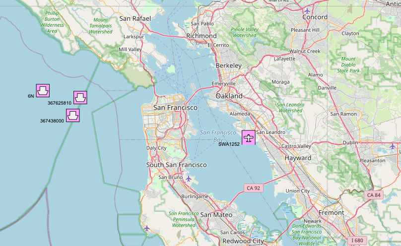
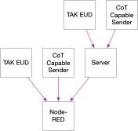
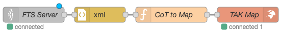
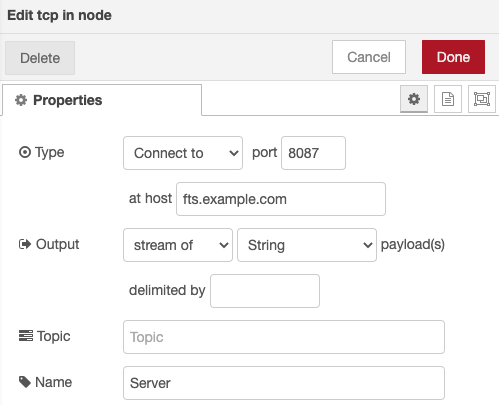
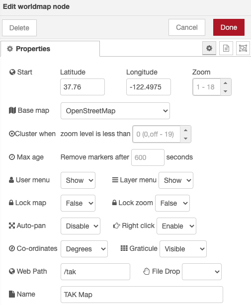

This article describes a method for integrating Node-RED into an operating environment utilizing TAK and/or Cursor on Target (CoT). This results in a web-browser-based map display of Position Location Information (PLI).
CoT Events can define a PLI, and TAK-capable EUD can send these Events over an IP network using TCP, UDP or Multicast. EUDs can send and receive these Events directly, or through an intermediary Server. The integration described in this method utilizses an intermediary Server between the EUD (or CoT sources) and Node-RED.

CoT was originally built as a plain-text XML-based transport for situational awareness (SA) Events. Software and devices that send and received these events are agnostic to the transport protocol, but tended to favor either TCP/IP Unicast or UDP/IP Broadcast (as well as UDP/IP Multicast). The format of these CoT Events is documented in MITRE xxx, and has evolved over time to match changes in the End-User Devices (EUD), including the ability to now utilize Protobufs.
The iconography and other display characeristics for CoT Events is defined in MIL STD 2525, which is based off of NATO Joint Military Symbology, SIDC Symbol identification coding. Of benefit to this integration is the fact that NATO SIDR support was added to the Node-RED Worldmap Node. This greatly simplifies integrating CoT into Node-RED.
The following are pre-requisite requirements for integrating Node-RED and TAK. You must have:
A running Node-RED server instance connected to an accessible IP network. There are several methods of installing and running Node-RED documented on the official website: Node-RED.
Node-RED's Worldmap Node.
A source of CoT Events. This can be any TAK EUD, or other device capable of transmitting CoT Events over an IP network. See the CivTAK Website: CivTAK
A Web-browser. Chrome was used for testing, others should work as well.
The Node-Red Flow for this integration is relatively simple at 4 total nodes:

You can download an example of this integration at: https://gist.github.com/ampledata/b550d60d98f641690190b62578954dd4
Please note that you will need to change the Server name from the one given
in the example (that is, change fts.example.com to the IP or hostname of your
Server).
An explanation of each step of the Flow, as well as a walk-through, is given this section.
At a high-level, the steps are:
In this step, the tcp-in Node is used to connect to the Server
fts.example.com. The Node is also configured to stream any data it receives
from the Server as String output messages:

The XML Parser Node is used to convert the XML CoT Event to JSON.
This step uses Node-RED's built-in function Node to run Node.js JavaScript
code. This code creates a Worldmap formatted JSON Payload for display in the
browser.
/* The following block of code transforms a JSONified CoT Event into a Worldmap Point Payload. */ let icon = null; let invalid = "9999999.0"; let event = msg.payload["event"]; /* If the CoT Event contains Detail Elements, extract the first one. If there are no Detail Elements, break. */ let _detail = event["detail"]; if (_detail === undefined) { return null; } let detail = _detail[0]; /* If the CoT Event contains a Point element, use it. If not, break. */ let point = event["point"]; if (point === undefined) { return null; } /* We'll use UID a couple of times, so lets set it as a variable here. */ let uid = event["$"]["uid"]; /* Extract the Event Type and Affiliation. */ let eventType = event["$"]["type"]; et = eventType.split("-"); let affil = et[1]; /* There is no '.' notation in SDR, so mark Neutral. */ if (affil.includes(".")) { affil = "n"; } /* Ram the CoT Event Type portions into a SIDR Type */ let SIDC = `s${affil}${et[2]}p${et[3] || "-" }${et[4] || "-" }${et[5] || "-" }--------`; /* Points on the Worldmap can only have one uniquite identifier, which is also that Points display name. If possible, use a Callsign, otherwise use UID. */ let callsign; let _contact = detail["contact"]; if (_contact === undefined) { callsign = uid; } else { callsign = _contact[0]["$"]["callsign"]; } /* Mouse-over Label */ let label = `Callsign: ${callsign} UID: ${uid}<br/>Type: ${eventType} SIDC: ${SIDC}` let remarks = detail["remarks"]; if (remarks) { remark = remarks[0]["$"]; label = `${label}<br/>${remarks}`; } let track = detail["track"] bearing = null; speed = null; if (track) { course = track[0]["$"]["course"]; if (course) { if (course.toString() !== invalid && course.toString() !== "0") { bearing = course; } } _speed = track[0]["$"]["speed"]; if (_speed) { if (_speed.toString() !== invalid) { speed = _speed; } } } /* If CoT Point CE is set and is not invalid, use that as Worldmap Point Accuracy. */ accuracy = null; ce = event["point"][0]["$"]["ce"]; if (ce.toString() !== invalid) { accuracy = ce; } /* Add a helpful weblink to Worldmap Points. */ weblink = null; if (uid.includes("ICAO")) { weblink = `https://globe.adsbexchange.com/?icao=${uid.replace("ICAO-", "")}`; } else if (uid.includes("APRS")) { weblink = `https://qrz.com/db/${uid.replace("APRS.", "").split("-")[0]}`; } /* Serialize as a Worldmap compatible Payload. */ msg.payload = { name: callsign, tooltip: label, lat: event["point"][0]["$"]["lat"], lon: event["point"][0]["$"]["lon"], speed: speed, bearing: bearing, accuracy: accuracy, SIDC: SIDC, icon: icon, ttl: 3600, weblink: weblink, layer: eventType } return msg;
The worldmap Node renders a webpage with map tiles and PLI markers.
Once added, it should work out-of-the-box. An example of a customized map follows:
